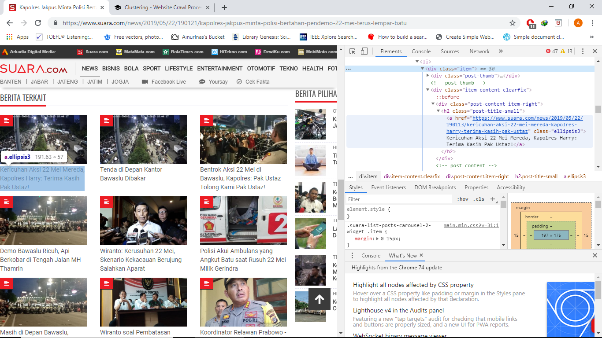
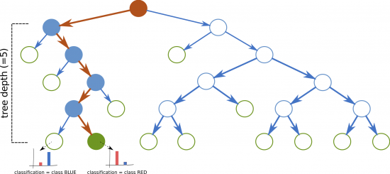
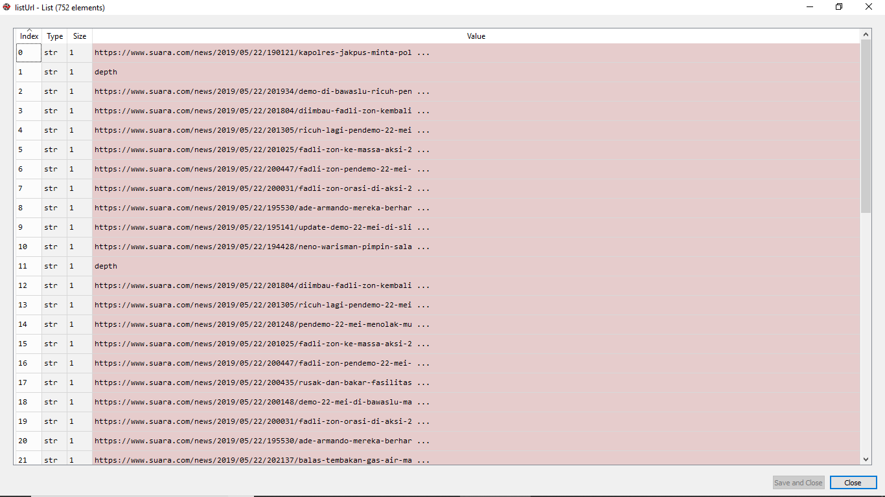
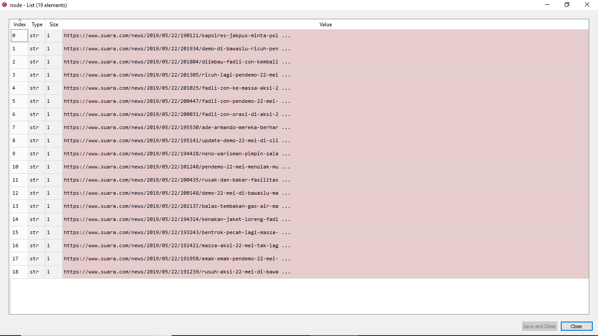
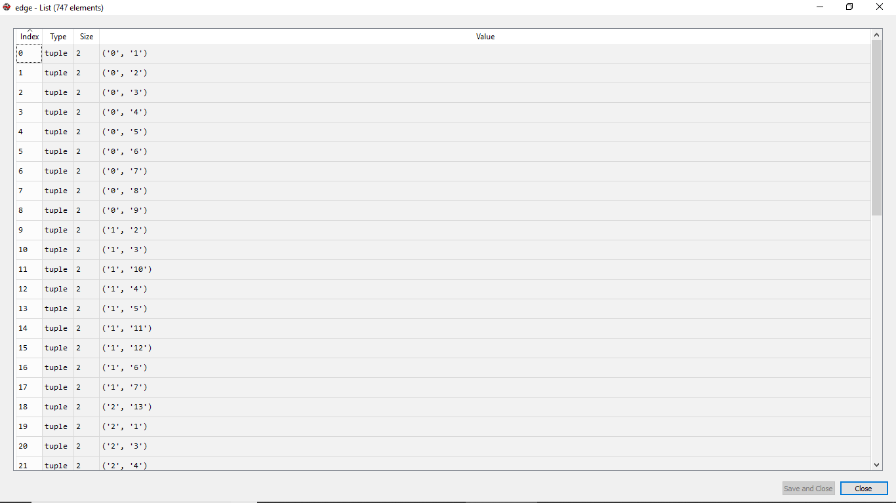
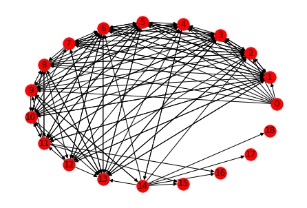

Introduction
Pagerank merupakan suatu algoritma yang bertujuan untuk menentukan kepopuleran salah satu situs. Pagerank merupakan salah satu layanan yang disediakan oleh Google. Pagerank disediakan oleh Mesin Pencari Google dan dibuat oleh salah satu ceo dan pendiri google yaitu Sergey Brin Dan Larry Page.
Pagerank berfungsi menentukan situs web mana yang lebih penting atau populer. Semakin tinggi pagerank yang dimiliki sebuah halaman web maka semakin populer halaman web tersebut, karena dengan pagerank yang tinggi yang milikinya itu berarti bahwa situs web tersebut banyak ditautkan oleh situs web lain.
Untuk mendapatkan situs yang populer dapat diketahui dengan mendapatkan jalur sitasi dari situs lain. Hal ini dapat dilakukan dengan salah satu cara yakni melakukan proses crawling pada situs dan mendapatkan data berupa link yang terdapat pada situs tersebut. Selanjutnya membuat jalur graf untuk mengetahui situs mana saja yang paling banyak disitasi. Untuk mengetahui populer tidaknya suatu situs dapat diurutkan berdasarkan nilai pagerank dengan inputan graf yang telah dibuat.
Step 1. Crawling
Apa itu web crawling ?
Web Crawler merupakan suatu program atau Script otomatis yang relatif simpel, menggunakan sebuah metode tertentu untuk melakukan scan atau crawl pada halaman internet untuk mendapatkan indek dari data yang dicari. Nama lain dari Web Crawler adalah Web Spider, Web Robot, Bot, Crawl dan Automatic Indexer.
Untuk penjelasan tentang web crawling dapat teman-teman baca pada postingan sebelumnya disini.
Apa yang akan dilakukan ?
Install library yang digunakan
import requests
from bs4 import BeautifulSoup
BeautifulSoup digunakan untuk dapat mengakses data html dan xml, sedangkan requests digunakan untuk dapat mengakses halaman web.
Menentukan root page
Root page merupakan halaman web berupa berita yang akan menjadi root atau akar atau base link yang akan di crawling. Berita yang akan digunakan adalah https://www.suara.com/news/2019/05/22/190121/kapolres-jakpus-minta-polisi-bertahan-pendemo-22-mei-terus-lempar-batu
Menentukan link yang akan dicrawl
- Untuk mendapatkan link yang berelasi dengan berita, content yang akan di crawling adalah pada bagian
Berita Terkait. - Sama seperti postingan sebelumnya, untuk mendapatkan tag html
Berita Terkaityang dilakukan adalah melakukaninspect element. inspect elementdapat dilakukan dengan cara : pada halaman berita,klik kanan >> inspectmaka panelinspect elementakan muncul seperti gambar dibawah. Atau menekanCtrl+Shift+I.- Selanjutnya cari tag html yang memuat link artikel pada
Berita Terkait, pada kasus ini tag html yang memuat link tersebut terletak di<a href="https://www.suara.com/news/2019/05/23/131313/janes-sosok-inspiratif-di-balik-kerusuhan-22-mei-pungut-sampah-pendemo" class="ellipsis3">Janes, Sosok Inspiratif di Balik Kerusuhan 22 Mei, Pungut Sampah Pendemo</a>.

Sehingga untuk melakukan crawling pada artikel tersebut, diperoleh code seperti berikut :
req = requests.get(url)
soup = BeautifulSoup(req.text, 'html.parser')
news_links = soup.find_all('a',{'class':'ellipsis3'}, href=True)
Looping hingga melakukan crawling pada kedalaman tertentu

Menginisialisasi kedalaman digunakan sebagai suatu kondisi agar looping berhenti, hal ini juga dapat digunakan untuk membatasi banyaknya link yang akan di crawling.
Full Code
import requests
from bs4 import BeautifulSoup
def getLinks():
url = "https://www.suara.com/news/2019/05/22/190121/kapolres-jakpus-minta-polisi-bertahan-pendemo-22-mei-terus-lempar-batu"
listUrl.append(url)
listUrl.append("depth")
count_depth = 3
depth = 1
nav = 0
cek = True
while cek == True :
if listUrl[nav] == "depth" :
listUrl.append("depth")
depth+=1
nav+=1
if depth > count_depth:
cek = False
else :
url = listUrl[nav]
req = requests.get(url)
soup = BeautifulSoup(req.text, 'html.parser')
news_links = soup.find_all('a',{'class':'ellipsis3'}, href=True)
for link in news_links:
listUrl.append(link['href'])
nav+=1
if __name__== "__main__":
listUrl = []
links = getLinks()
Hasil

Step 2. Graph Processing
Apa itu graph ?
Graph atau Graf adalah kumpulan noktah (simpul) di dalam bidang dua dimensi yang dihubungkan dengan sekumpulan garis (sisi). Graph dapat digunakan untuk merepresentasikan objek-objek diskrit dan hubungan antara objek-objek tersebut. Representasi visual darigraph adalah dengan menyatakan objek sebagai noktah, bulatan atau titik (Vertex), sedangkan hubungan antara objek dinyatakan dengan garis (Edge).
G = (V, E)
Dimana :
G = Graph
V = Simpul atau Vertex, atau Node, atau Titik
E = Busur atau Edge, atau arc
V adalah himpunan verteks dan E adalah himpunan sisi yang terdefinisi antara pasangan-pasangan verteks. Sebuah sisi antara verteks x dan y ditulis {x,y}. Suatu graph H = (V1, E1) disebut subgraph dari graph G jika V1 adalah himpunan bagian dari V dan E1 himpunan bagian dari E.
Cara pendefinisian lain untuk graph adalah dengan menggunakan himpunan keterhubungan langsung Vx. Pada setiap verteks x terdefinisi Vx sebagai himpunan dari verteks-verteks yang adjacent dari x. Secara formal:
Vx = {y | (x,y) -> E}
Apa manfaat dari graph ?
Tiap-tiap diagram memuat sekumpulan obyek (kotak, titik, dan lain-lain) beserta garis-garis yang menghubungkan obyek-obyek tersebut. Garis bisa berarah ataupun tidak berarah.
- Garis yang berarah biasanya digunakan untuk menyatakan hubungan yang mementingkan urutan antar objek-objek. Urut-urutan objek akan mempunyai arti yang lain jika arah garis diubah. Sebagai contoh adalah garis komando yang menghubungkan titik-titik struktur sebuah organisasi.
- Sebaliknya, garis yang tidak berarah digunakan untuk menyatakan hubungan antar objek-objek yang tidak mementingkan urutan. Sebagai contoh adalah garis untuk menyatakan jarak hubung 2 kota pada Gambar 2. Jarak dari kota A ke kota B sejauh 200 km akan sama dengan jarak dari kota B ke kota A. Apabila jarak 2 tempat tidak sama jika dibalik (misalnya karena harus melalui jalan memutar), maka garis yang digunakan haruslah garis yang berarah.
Apa yang akan dilakukan ?
Install library yang digunakan
import matplotlib.pyplot as plt
import networkx as nx
matplotlib digunakan untuk dapat memvisualisasikan graph, sedangkan networkx digunakan untuk dapat mengakses atau membangun graph.
Menentukan node dan edge
Node merupakan kumpulan dari link yang telah diperoleh dari hasil crawling, sedangkan Edge merupakan hubungan antar link atau link yang saling berkaitan. Oleh karena itu, saat melakukan crawling alangkah lebih baiknya jika menginisialisasi Node dan Edge secara bersamaan.
url = listUrl[nav]
req = requests.get(url)
soup = BeautifulSoup(req.text, 'html.parser')
news_links = soup.find_all('a',{'class':'ellipsis3'}, href=True)
node_A = node.index(url)
for link in news_links:
listUrl.append(link['href'])
if link['href'] not in node :
node.append(link['href'])
node_B = node.index(link['href'])
value = (str(node_A),str(node_B))
edge.append(value)
Saat mengunjungi sebuah artikel, link dari artikel tersebut akan di tambahkan ke dalam list node node.append(link['href']), setelah itu link dari artikel node_A = node.index(url) dan link terkait node_B = node.index(link['href']) di inisialisasi dan ditambakan pada list edge,
value = (str(node_A),str(node_B))
edge.append(value)
Sehingga keseluruhan code untuk proses crawling dan inisialisasi Node dan Edge diperoleh :
import my_function as func
import requests
from bs4 import BeautifulSoup
def getLinks():
url = "https://www.suara.com/news/2019/05/22/190121/kapolres-jakpus-minta-polisi-bertahan-pendemo-22-mei-terus-lempar-batu"
listUrl.append(url)
listUrl.append("depth")
node.append(url)
count_depth = 3
depth = 1
nav = 0
cek = True
while cek == True :
if listUrl[nav] == "depth" :
listUrl.append("depth")
depth+=1
nav+=1
if depth > count_depth:
cek = False
else :
url = listUrl[nav]
req = requests.get(url)
soup = BeautifulSoup(req.text, 'html.parser')
news_links = soup.find_all('a',{'class':'ellipsis3'}, href=True)
node_A = node.index(url)
for link in news_links:
listUrl.append(link['href'])
if link['href'] not in node :
node.append(link['href'])
node_B = node.index(link['href'])
value = (str(node_A),str(node_B))
edge.append(value)
nav+=1
if __name__== "__main__":
listUrl = []
node = []
edge = []
links = getLinks()
func.save_list("node",node)
func.save_list("edge",edge)
func.save_list("listUrl",listUrl)
Untuk
import my_function as funcdigunakan untuk menyimpan hasil dari proses diatas. Function ini telah dibahas pada postingan sebelumnya, code nya juga tersedia pada postingan sebelumnya.
- Gambar di bawah merupakan himpunan dari Node atau link hasil crawling.

- Gambar di bawah merupakan Edge atau keterkaitan antar link dari hasil crawling.
- Node pada Edge dipresentasikan dengan indeks dari list Node, hal ini bertujuan sebagai pengganti label, sehingga diperoleh hasil seperti gambar dibawah ini :

Membangun graph
Setelah Node dan Edge sudah diinisialisasi, gunakan library networkx untuk membuat node dan edge pada graph. Kemudian gunakan nx.draw_circular untuk menvisualisasi kan.
G=nx.DiGraph()
# a list of nodes:
pages = []
for i in range(0,len(node)):
pages.append(str(i))
G.add_nodes_from(pages)
G.add_edges_from(edge)
nx.draw_circular(G,node_color='red', with_labels = True)
Gunakan library matplotlib untuk menyimpan dan menampilkan hasil graph.
nx.draw_circular(G,node_color='red', with_labels = True)
plt.show() # display
plt.savefig("path.png")
Full Code
import matplotlib.pyplot as plt
import networkx as nx
import numpy as np
import my_function as func
if __name__== "__main__":
node = func.load_list("node")
edge = func.load_list("edge")
G=nx.DiGraph()
# a list of nodes:
pages = []
for i in range(0,len(node)):
pages.append(str(i))
G.add_nodes_from(pages)
G.add_edges_from(edge)
print("Nodes of graph: ")
print(G.nodes())
print("Edges of graph: ")
print(G.edges())
print("Number of outward links for each node:")
for page in pages:
print(["Page %s = %s"% (page,str(len(G.out_edges(page))))])
# nx.draw(G, with_labels = True)
# plt.show() # display
nx.draw_circular(G,node_color='red', with_labels = True)
plt.show() # display
plt.savefig("path.png")
Hasil

Step 3. Page Rank
Apa itu page rank ?
Kata Pagerank berasal dari salah satu istilah para pengguna blog di dalam sistem yang dibuat mesin pencari untuk menilai dan memberikan peringkat pagerank kepada suatu situs. Mesin pencari yang memberikan pagerank kepada suatu situs ini adalah Mesin Pencari Google.
Pagerank juga merupakan suatu algoritma yang bertujuan untuk menentukan kepopuleran salah satu situs. Pagerank merupakan salah satu layanan yang disediakan oleh Google. Pagerank disediakan oleh Mesin Pencari Google dan dibuat oleh salah satu ceo dan pendiri google yaitu Sergey Brin Dan Larry Page.
Apa manfaat dari page rank ?
Fungsi utama dari pagerank yaitu menganalisis berbagai link yang masuk (backlink) kemudian akan dihitung berapa jumlah link yang masuk (Inbound) dan link yang keluar (Outbound) dari sebuah halaman web tersebut, yang kemudian akan menghasilkan pagerank yang kita dapatkan.
Pagerank juga berfungsi menentukan situs web mana yang lebih penting atau populer mulai dari skala yang paling tinggi 10 hingga skala yang paling rendah yaitu 0. Semakin tinggi pagerank yang dimiliki sebuah halaman web maka semakin populer halaman web tersebut, karena dengan pagerank yang tinggi yang milikinya itu berarti bahwa situs web tersebut banyak ditautkan oleh situs web lain.
Apa yang akan dilakukan ?
Menentukan page rank
PR = nx.pagerank(G)
value = max(PR, key=PR.get)
print(PR)
print("The most important node is " + value)
print("The most important link is " + node[int(value)])
Untuk menentukan page rank dapat menggunakan library yang tersedia yakni nx.pagerank(G). Dimana secara default,
pagerank(G, alpha=0.85, personalization=None, max_iter=100, tol=1e-06, nstart=None, weight='weight', dangling=None)
- G (graph)
- alpha – Damping parameter for PageRank, default=0.85.
- personalization – The “personalization vector” consisting of a dictionary with a key for every graph node and nonzero personalization value for each node. By default, a uniform distribution is used.
- max_iter – Maximum number of iterations in power method eigenvalue solver.
- tol – Error tolerance used to check convergence in power method solver.
- nstart – Starting value of PageRank iteration for each node.
- weight – Edge data key to use as weight. If None weights are set to 1.
- dangling – The outedges to be assigned to any “dangling” nodes, i.e., nodes without any outedges. The dict key is the node the outedge points to and the dict value is the weight of that outedge. By default, dangling nodes are given outedges according to the personalization vector (uniform if not specified). This must be selected to result in an irreducible transition matrix (see notes under google_matrix). It may be common to have the dangling dict to be the same as the personalization dict.
Full Code
import matplotlib.pyplot as plt
import networkx as nx
import numpy as np
import my_function as func
if __name__== "__main__":
node = func.load_list("node")
edge = func.load_list("edge")
G=nx.DiGraph()
# a list of nodes:
pages = []
for i in range(0,len(node)):
pages.append(str(i))
G.add_nodes_from(pages)
G.add_edges_from(edge)
print("Nodes of graph: ")
print(G.nodes())
print("Edges of graph: ")
print(G.edges())
print("Number of outward links for each node:")
for page in pages:
print(["Page %s = %s"% (page,str(len(G.out_edges(page))))])
image = nx.draw_circular(G,node_color='red', with_labels = True)
PR = nx.pagerank(G)
value = max(PR, key=PR.get)
print(PR)
print("The most important node is " + value)
print("The most important link is " + node[int(value)])
Hasil
{'0': 0.010786569775923953, '1': 0.07877510607400716, '2': 0.08429369074060056, '3': 0.07809532275240762, '4': 0.0832487848846966, '5': 0.07877510607400716, '6': 0.09362252732892531, '7': 0.05898444024971937, '8': 0.04722108385186022, '9': 0.05449031715893964, '10': 0.059246340407318104, '11': 0.053614561859208744, '12': 0.04898793734885993, '13': 0.07513404487029707, '14': 0.030085143833367904, '15': 0.01869154414248863, '16': 0.01869154414248863, '17': 0.013627967252441656, '18': 0.013627967252441656}
Diperoleh pagerank dari masing-masing link seperti diatas. Sehingga, yang memiliki nilai maksimum merupakan node yang paling penting.
The most important node is 6
Dan node dengan label 6 merupakan link dari :
https://www.suara.com/news/2019/05/22/200031/fadli-zon-orasi-di-aksi-22-mei-jangan-sampai-meninggal-dunia
Conclusion
Pada artikel kali ini, diperoleh nilai pagerank dari masing-masing link yang didapat pada proses crawling, nilai pagerank digunakan untuk mengetahui artikel mana yang paling banyak diakses.
Full Code bisa didownload di sini disini.
References
http://skipperkongen.dk/2016/08/16/how-to-compute-the-pagerank-of-almost-anything/
http://t4urusboy08.blogspot.com/
http://ovieciinduts.blogspot.com/2012/01/teori-graf.html
https://rahman371.wordpress.com/2014/10/10/apa-itu-pagerank/
https://www.caramanual.com/2017/01/apa-itu-pagerank-inilah-pengertian-dan.html